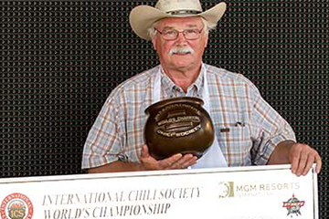

Yakety Yak Ranch Chili by Mike Stevens

Description
When Mike was around five years old his dad took him to eat at Lindy's Chili after a visit with his grandmother. (In its prime, Lindy's was a great chili institution located on the Southwest side of Chicago). Mike got his first bowl of red there and he was hooked! From there his quest to eat and later COOK the best chili in the world began! In 1995 Mike qualified for his first World Championship and 2014 marked Mike's TENTH year qualifying for and cooking in the ICS WCCC.
Ingredients
Base
- 3 lbs cubed beef trip-tip
- 2 14 oz cans beef broth
- 1 8 oz can of tomato sauce
- 4 cloves of garlic - pressed
- 1 tbsp Tabasco®
- 1 jalapeno pepper pierced
1st spice mix
- 1 tbsp onion powder
- 1 tbsp garlic powder
- 1/2 tsp Mexican ground oregano
- 1/4 tsp ground Bay Leaf powder
- 1 tbsp Hernandez Farm medium New Mexico chili powder
- 1 tbsp paprika
- 1 tbsp Penderys Fort Worth light chili powder
- 1/2 tbsp New Mexico hot chili powder
- 1/2 tbsp Mild Bill's Cadillac Cowgirl chili blend
- 2 tsp chicken granules
- 2 tsp beef granules
- 1 tbsp gound cumin
2nd spice mix
- 1 tbsp ground cumin
- 2 packets Sazon Goya seasoning
- 1/4 tsp brown sugar
- 1 tbsp garlic powder
- 1/4 tsp white pepper
- 1 tbsp Hernandez Farm medium New Mexico chili powder
- 1 tbsp paprika
- 1/2 tbsp Penderys Fort Worth light chili powder
- 1/2 tbsp Mild Bill's Cadillac Cowgirl chili blend
Steps
- Brown meat, drain and rinse and then add 2 cans of beef broth, can of tomato sauce, 1 tbsp Tabasco, pressed garlic and 1st Spice Mix.
- Pierce a jalapeno pepper and float in sauce.
- Simmer for 2-2 1/2 hours and then remove the softened jalapeno, squeezing it into the sauce to give it a little more heat.
- Add the 2nd Spice Mix and simmer for another 1/2 hour and then serve up.